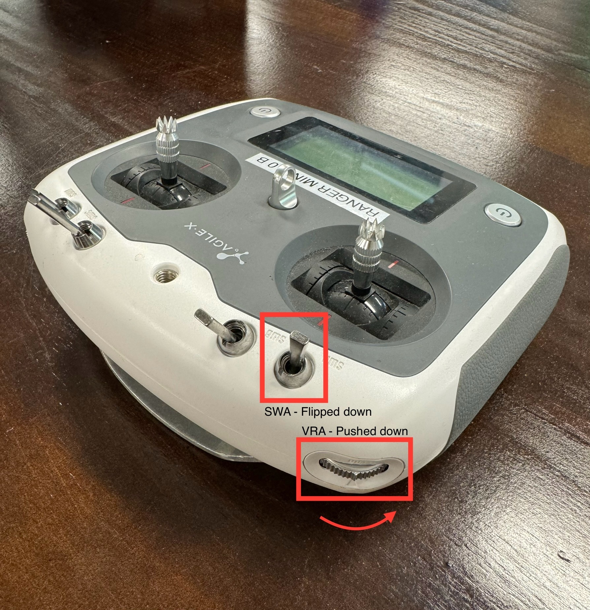
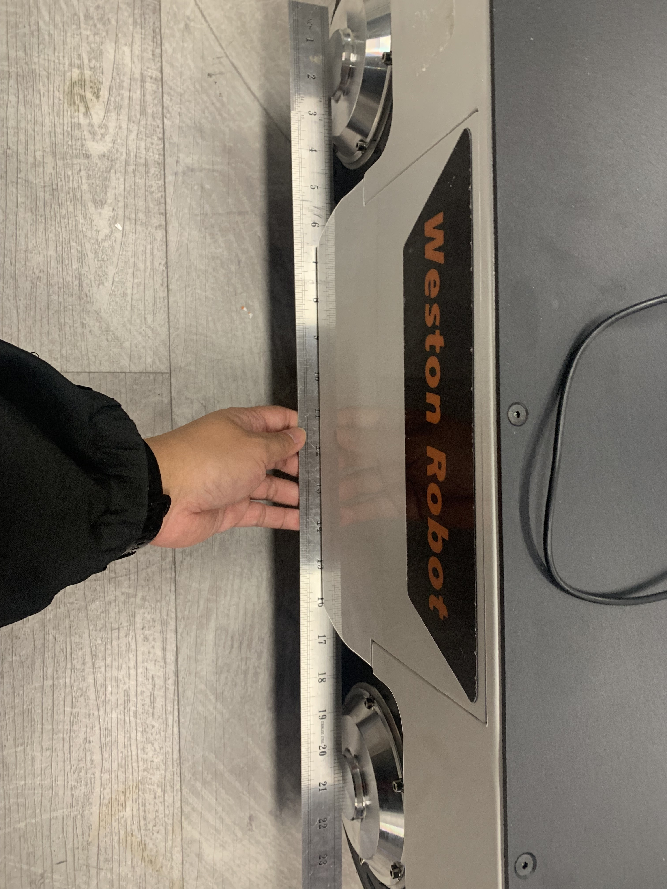

Ranger Mini V2.0
Revision History
Revision |
Date (DD/MM/YYYY) |
Author |
Changes |
|---|---|---|---|
1 |
04/05/2023 |
Kee Jin |
Initial release |
2 |
04/05/2023 |
Matthew |
Added steering wheel calibrations |
1. Overview
The Ranger Mini 2.0 mobile robot is an independent four-wheeled differential drive platform.
2. Specifications
Steering |
4-wheel steering |
Size |
738mm x 500mm x 338mm |
Minimum Ground Clearance |
107mm |
Operating Temperature |
-10 - 40 ℃ |
IP Rating |
IP54 |
Maximum Speed |
5.4km/h |
Maximum Angle of Tilt |
<15° (with loading) |
Charging Time |
1.5h |
Battery |
48V, 24AH |
User Power Supply |
48V, 15A (Max) |
Weight |
64.5kg |
Rated Load |
80kg |
Remote Control Range |
2.4G / 200m |
Motion Type |
Position Drift |
Orientation Drift |
Forward |
≤ 20cm |
≤ 3 degrees |
Side Slip |
≤ 30cm |
≤ 5 degrees |
Turn |
– |
≤ 2 degrees |
Note
The above data was obtained on a 10-meter standard testing ground in the laboratory. Actual data may vary due to on-site environmental conditions and road conditions.
1. Steering Motor Calibration
Autocalibration
Turn on robot and controller. With SWA flipped to down position, and VRA pushed to bottommost position, press KEY1.
{kind=link}


Manual Calibration
Turn off robot and controller. While robot is turned off, adjust the position of the steering wheels. Using a long straight object to help straighten the wheels is generally sufficient.
{kind=link}

Turn on robot and controller. With SWA flipped to down position, and VRA pushed to topmost position, press KEY1.

The controller display should flash a error code for 1-2 seconds then return to normal. Calibration is completed.
4. Resources
Ranger Mini 2.0 Manual (EN): PDF
Ranger Mini 2.0 Manual (CN): PDF
C++ SDK: ugv_sdk
ROS1 package: ranger_ros
ROS2 package: ranger_ros2
CAD File: Ranger Mini 2.0 STEP file
Note
Please refer to the Robot Upgrade Guide for firmware upgrade instructions.